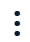

什么是品牌个人中心
品牌个人中心是一套用于管理 Ozon 平台品牌卖家和商品质量的工具。在品牌个人中心，您可以：
确认品牌代表身份；
查看品牌卖家及其商品列表；
对商品进行投诉（如涉嫌假冒）；
启动和设置卖家商品的广告活动；
创建 品牌官方橱窗 ；
以官方品牌代表身份回复买家评价；
获取 Ozon 热销商品、品牌缺少商品、各类目核心搜索词等分析数据。
谁可以成为品牌代表并获得品牌个人中心的访问权限
在 Ozon 平台，以下人员可成为品牌代表：
权利享有者；
独家被授权商
经授权的权利人或独家授权方代表。
品牌需在俄罗斯联邦的 国家 或 国际 知识产权系统完成注册。
申请品牌个人中心需要哪些文件
品牌代表资格文件审核需要多长时间
审核时间取决于总体申请量、材料准确性及扫描/照片质量。通常审核时长为14天。
一个品牌个人中心可以管理多个品牌吗
可以，只要您获得了多个 品牌代表身份 的审核通过。
如何在 Ozon 注册新品牌
如平台尚无该品牌，您可以申请添加。
为什么没有在品牌卖家列表中看到自己
您当前处于品牌卖家个人中心，因此列表中只显示其他卖家。
您的卖家个人中心与品牌个人中心注册在同一法人名下。
如何成为已有品牌代表的品牌的新代表
同一品牌在平台上仅能有一位代表，平台会根据文件的法律效力进行认定。如需更换代表，请联系 客服 ： 个人中心 → 品牌个人中心 → 品牌账户的注册和激活 ，并附上 相关文件 。审核时：
若您的文件法律效力相同或较弱，现有代表不变；
若您的文件更具法律效力，品牌个人中心将转至您名下。例如，您为商标权人，现代表仅为拥有品牌代理和保护权的分销商。
为什么我的品牌代表申请被拒绝
文件未明确说明您有商标所有或品牌保护权；
材料不全，例如未上传所有权、品牌保护权或额外要求的材料。
申请品牌代表被拒后怎么办
请核查 拒绝原因 。
如需补充材料，请将新材料上传至被拒申请，无需重新提交新申请。
打开 设置 → 品牌 模块。
转到 品牌代表 选项卡。
在被拒申请行点击

，选择 编辑 。在 品牌代表申请 窗口删除需要替换的文件。
上传新文件。
点击 保存更改 。
质检专员将在14天内重新审核您的申请。可在 设置 → 品牌 的 品牌代表 选项卡实时跟踪进度。
未收到品牌代表激活确认邮件怎么办
请检查垃圾邮箱。如仍未收到，请联系 客服 ： 个人中心 → 品牌个人中心 → 品牌账户的注册和激活 。
同一法人可以注册多少品牌
品牌数量不限。
一个品牌在 Ozon 可以有多少代表
每个品牌在 Ozon 平台上仅可有一名官方代表。
哪些员工可以申请品牌代表
仅限“主管”与“管理员”角色可提交申请。
品牌个人中心注册申请审核需要多长时间
我们审核品牌个人中心访问申请材料一般需要5至10个工作日。
您可以在 设置 → 品牌 的 品牌代表 选项卡查看申请状态。如果材料无误，状态会变为“已通过检查”；如有问题，则会变为“已拒绝”。
为什么提交申请后，品牌个人中心没有显示商品和卖家
因未加盖公章被拒绝，但公司无公章时怎么办
请在申请中上传以下材料：
公司章程；
如无章程，可上传其他能证明企业合法经营的文件。
如何续期品牌个人中心访问权限
在 设置 → 品牌 → 品牌代表 选项卡，删除已过期的申请记录，并提交一份含有最新材料的新申请。在新材料审核期间，您的品牌个人中心访问权限将受到限制。
如何获得“品牌已认证”徽章
针对被高频仿冒的品牌，平台在审核通过后会免费授予商品“正品”徽章。其他品牌则可通过付费开通。
如何注册第二个品牌个人中心
注册第二个品牌个人中心 时，须使用不同的邮箱地址——每个中心的“主管”邮箱需唯一。
如果您除了品牌代表账号外还有其他 Ozon 卖家账号，多个店铺的商品重合度不得超过30%。否则根据平台协议，平台将关闭除一个账号外的其他所有账号。
哪里可以查看商标号
商标号在商标商标证明书上有标注。如果无法获得纸质证明书，可以通过以下方式查询：
任何商标在线查询工具，例如免费服务 Linkmark.ru 。
在申请品牌个人中心访问权限时如何正确填写商标号
请只输入数字，不要填写任何其他符号、前导零、空格或标点符号。
什么是尼斯分类，如何判断商标所属类别
尼斯分类是国际商品和服务分类体系，所有商标均须按照该体系注册：
1–34类属于商品；
35–45类属于服务。
要查询品牌所属类别，可使用免费服务 Linkmark.ru .
哪些尼斯分类卖家可开通品牌个人中心
商品类别为尼斯分类1到34类的卖家可开通品牌个人中心。
如果您的商标在多个类别同时注册，只要其中有一个属于1到34类商品，也可以开通品牌个人中心。
Premium Brand订阅包含哪些功能
订阅后，您可以使用品牌个人中心的所有功能，包括：
跟踪品牌商品在 Ozon 平台上的动态。
以品牌官方代表身份回复买家评价和问题，提升买家忠诚度。您的回复将带有“官方品牌代表”标识。
创建商品列表以便跟踪新品上架、商品隐藏以及价格变动，系统会单独显示由 Ozon 自营销售的商品。
了解买家的搜索偏好，分析热门商品及平台缺货品类。
了解品牌在相关类目中的销售份额以及其他品牌的销售份额。
跟踪商品在类目中的销售趋势，通过图表分析销售波动原因。
评估类目的市场潜力和需求情况。
Premium Brand的权益是否包含在Premium Plus订阅中
对于卖家来说，Premium Brand的全部权益已包含在Premium Plus订阅内。
品牌个人中心和卖家个人中心是否需要分别单独订阅
如果您用同一账号，可以在品牌个人中心和卖家个人中心之间切换，则开通Premium Plus后，品牌个人中心所有工具均可使用，无需单独开通Premium Brand。
如果您是分开的个人中心，且无法互相切换，则每个个人中心都需单独开通相应订阅。
可以将品牌账号与开通Premium Plus的卖家账号合并吗
如为不同账号，请在品牌个人中心删除原有申请，并在卖家个人中心重新提交申请。如果材料审核通过且订阅激活，您即可获得品牌个人中心的访问权限。
未订阅Premium Brand是否可以使用品牌个人中心
部分品牌个人中心功能无需Premium Brand订阅即可使用，例如：
其余高级工具仅限开通订阅后使用。